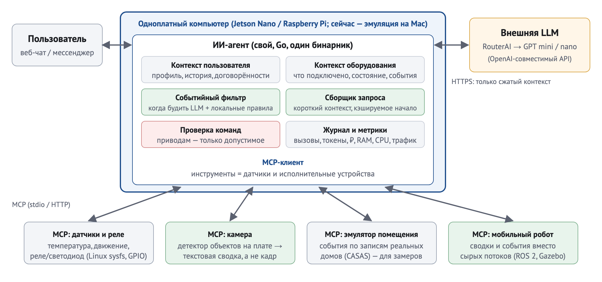

План выпускной квалификационной работы
Кратко. ИИ-агент работает на одноплатном компьютере, к которому подключены датчики, камера и исполнительные устройства. Агент сам решает, когда и с какой справкой обращаться к внешней языковой модели (GPT mini/nano через RouterAI), часть событий обрабатывает локальными правилами без модели и проверяет каждую команду исполнительным устройствам; модель нужна для разбора запросов пользователя и нештатных ситуаций. Сведения об оборудовании агент получает через MCP-серверы. Агент ведёт два контекста: пользователя (что просил, что предпочитает) и оборудования (что подключено, что показывают датчики, что произошло).
Каждый вызов модели требует денег, времени и трафика, поэтому главный вопрос работы — как вести эти контексты и когда вызывать модель, чтобы агент часами работал дёшево на маломощном оборудовании и не пропускал важное. Результат оценивается так, как предложил руководитель, — по работе системы во времени: за рабочий день подсчитываются вызовы модели, токены, расходы в рублях, трафик, потребление памяти и загрузка процессора платы, задержка реакции.
1. Тема и рабочее уточнение
На титул (без изменений): «Разработка ИИ-агента для приложений граничного искусственного интеллекта».
Уточнение во введении: ИИ-агент для одноплатного компьютера, использующий внешнюю языковую модель и MCP-доступ к датчикам и исполнительным устройствам и экономно ведущий контексты пользователя и оборудования при многочасовой работе.
Это граничный ИИ в широком смысле обзора [1], который не сводит его к «модели на устройстве»: по шкале из [1] рассуждение относится к уровню 1 (совместный вывод «облако — граница»: данные обрабатываются рядом с источником, в облако уходит только сжатый контекст), а распознавание камерой — к уровню 3 (вывод на устройстве). Кроме того, на плате работают событийный фильтр, локальные правила и проверка команд. Агент понимается в «слабом» смысле [2]: он автономен, реагирует на изменения окружения, действует по собственной инициативе и взаимодействует с пользователем.
Почему языковая модель внешняя. На одноплатнике с несколькими гигабайтами памяти практически пригодны только языковые модели примерно до 1,5 млрд параметров, и они медленные: на Raspberry Pi 5 это порядка 5–15 токенов в секунду, а модели на 3 млрд параметров дают 2–5 токенов в секунду [23]. Открытые модели, сопоставимые по качеству с облачными, требуют десятков гигабайт памяти (например, около 43 ГБ для модели на 70 млрд параметров при 4-битном квантовании [24]). Поэтому «думает» облако, а на плате остаются задачи, которые она решает быстро и локально: распознавание объектов в кадре камеры, фильтрация событий, локальные правила, проверка команд. Для главы 1 это решение будет подкреплено одним контрольным замером на самой плате: время ответа локальной модели около 1 млрд параметров на типичный запрос агента.
2. Что строится

Рисунок 1 — Состав системы. Зелёным отмечены механизмы, которые сокращают число вызовов модели и объём передаваемых данных; красным — проверка команд исполнительным устройствам.
- Агент — собственная программа на Go: один статический исполняемый файл без внешних зависимостей. По требованиям Go (ядро Linux ≥ 3.2) такой файл должен запускаться и на устаревшей системе Jetson Nano (Ubuntu 18.04, ядро 4.9), и на Raspberry Pi; на самой плате это будет проверено дымовым тестом. Внутри — цикл агента, два контекста, событийный фильтр, модуль формирования запроса, проверка команд, журнал метрик. Нижний уровень (локальные правила и проверка команд) работает и без модели — в соответствии с идеей многоуровневой архитектуры управления [3]. Проверка команд вынесена из запроса к модели в отдельный детерминированный модуль, потому что правила, записанные в запросе, модель соблюдает не полностью [10].
- MCP-серверы оборудования. Датчики и реле (сведения о подключённом оборудовании берутся из данных, которые уже предоставляет ядро Linux). Камера с детектором объектов на плате: в модель уходит текстовая сводка («в комнате 1 человек»), а не кадр, потому что кадр стоит намного больше токенов: кадр 640×480 — около 360–740 токенов у моделей GPT-5 и GPT-4.1 mini и nano и 2 833–14 167 у gpt-4o-mini против 30–60 токенов у текстовой сводки (от нескольких раз до сотен раз в зависимости от модели). Эмулятор помещения по записям датчиков реальных домов (набор CASAS [5, 25]) нужен для воспроизводимых замеров без реального оборудования. Второй сценарий — мобильный робот TurtleBot3 в симуляторе Gazebo под управлением ROS 2 (камера, лидар, одометрия, навигация Nav2). Симулятор работает в отдельной виртуальной машине, агент — на «плате», связь по сети через rosbridge, как при реальном развёртывании. Для сравнения используется готовый MCP-мост ros-mcp-server, а собственный компактный MCP-адаптер робота отдаёт модели короткие сводки и события вместо сырых потоков датчиков. Обмен идёт по протоколу MCP в ревизии 2025-11-25 [16], которую поддерживают и PicoClaw, и nanobot.
- Измерительный стенд «рабочего дня». Один и тот же день — команды пользователя и события датчиков по реальным данным — воспроизводится на разработанном агенте и на аналогах. Потребление ресурсов, вызовы модели и затраты регистрируются как временные ряды.
3. Аналоги и новизна
| Система | Что это | Ресурсы |
|---|
| OpenClaw [20] | самый популярный личный ИИ-агент (TypeScript, около 391 тыс. звёзд на GitHub): внешняя языковая модель, инструменты, мессенджеры, периодическая фоновая проверка (heartbeat) | тяжёлый: медиана пиковой памяти около 2,9 ГиБ (2 926,6 МиБ; Docker на рабочей станции, замер на задачу) [11]; на Jetson Nano штатно не запускается: текущая версия требует Node.js ≥ 24.16, а официальные сборки Node.js для arm64 — glibc ≥ 2.28 и ядро ≥ 4.18 (на Nano 2.27 и 4.9) |
| NanoClaw [19] | облегчённая альтернатива OpenClaw (TypeScript): каждый агент в своём контейнере, внутри — Claude Agent SDK, другие модели подключаются дополнениями. Из него взят приём «скрипт решает, будить ли модель» (wakeAgent: false) | Node.js ≥ 22 и Docker; на Jetson Nano штатно не запускается, с GPT mini через RouterAI штатно не работает — поэтому в замерах не участвует и разбирается в главе 1 |
| PicoClaw [17] | сверхлёгкий агент на Go для недорогих устройств (Sipeed) | заявлено менее 10 МБ (новые сборки 10–20 МБ) [17]; независимый замер — около 31 МБ пиковой памяти на Raspberry Pi 4 [22] |
| nanobot [21] | лёгкий агент на Python (HKUDS) | около 130 МБ пиковой памяти на Raspberry Pi 4 [22]; медиана 136 МиБ в замере [11] (версия 0.1.5) |
| Home Assistant + языковая модель + MCP | платформа умного дома с языковой моделью; широко распространена, часто работает на Raspberry Pi | полноценный сервер умного дома |
| IoT-MCP [6] | научная работа: MCP-серверы для датчиков на граничных узлах | среднее время ответа 205 мс, пиковая память 74 КБ на микроконтроллере, 12-часовой прогон без учёта токенов |
Что уже известно. Схема «тонкий агент на плате + внешняя языковая модель + MCP к оборудованию» уже широко распространена, и отдельные приёмы экономии уже встречаются у этих систем: неизменное начало (префикс) запроса для кэширования на стороне провайдера, фильтры перед вызовом модели, сокращение истории. В работе эти приёмы не выдаются за новые, на их источники даются ссылки. Смежное направление — «операционные системы для агентов» на серверах [15].
Чего нет (пробел). Замеры этих агентов сделаны на коротких задачах. В проверенных источниках не найдено измерений того, как такой агент ведёт себя в течение многочасового рабочего дня на реальном одноплатном компьютере: сколько вызовов модели он делает, сколько токенов, рублей, трафика и памяти расходует и при какой нагрузке каждый приём экономии действительно окупается.
Личный вклад студента:
- собственный агент с двумя контекстами и событийным фильтром;
- MCP-сервер оборудования, который сам строит описание подключённых датчиков и реле по данным ядра Linux, без ручной настройки (готовой реализации этого приёма в проверенных источниках не найдено);
- MCP-сервер камеры с распознаванием объектов на плате;
- стенд «рабочего дня» на реальных данных;
- сравнение с аналогами в одинаковых условиях (одна модель, одни MCP-серверы, один сценарий дня) и в их лучших штатных настройках;
- оценка вклада каждого механизма и условий, при которых он окупается.
4. Цель и задачи
Объект: процесс функционирования ИИ-агента на одноплатном компьютере, использующего внешнюю языковую модель и MCP-доступ к оборудованию.
Предмет: механизмы ведения контекстов пользователя и оборудования и выбора момента вызова модели, их влияние на затраты и потребление ресурсов системы при многочасовой работе.
Цель: сократить суточные затраты на обращения к внешней языковой модели (число вызовов, входные токены, рубли в сутки) ИИ-агента на одноплатном компьютере, чтобы его многочасовая ежедневная работа укладывалась в ограниченный бюджет на модель и ресурсы платы. Сокращение показывается относительно периодической фоновой проверки — штатного режима PicoClaw и nanobot; относительно PicoClaw в лучшей штатной настройке затраты должны быть не выше. Условия: полнота реакции на значимые события не хуже (допуск 5 процентных пунктов), небезопасных команд исполнительным устройствам — ноль. Достижение цели проверяется по 95-процентным доверительным интервалам отношений затрат на рабочем дне на плате.
Задачи:
- Проанализировать существующих ИИ-агентов для граничных устройств, протокол MCP и подходы к ведению контекста; выявить пробел в существующих исследованиях.
- Разработать методику оценки «рабочего дня»: сценарий нагрузки по реальным данным, метрики, правила сравнения, методы статистической обработки.
- Спроектировать архитектуру агента и MCP-серверов оборудования.
- Реализовать агента, MCP-серверы (датчики и реле, камера с распознаванием, эмулятор помещения, компактный адаптер мобильного робота) и измерительный стенд.
- Выбрать основную модель среди GPT mini/nano разных версий по стоимости успешного действия на командах стенда; провести сравнительные эксперименты с аналогами в эмуляции и на одноплатном компьютере.
- Проанализировать результаты: оценить вклад механизмов, определить условия их окупаемости, сформулировать рекомендации по настройке.
Структура записки (40–60 страниц, три главы): глава 1 — обзор, аналоги, почему модель внешняя, пробел (задача 1); глава 2 — методика «рабочего дня», архитектура агента и MCP-серверов (задачи 2–3); глава 3 — реализация, эксперименты, сравнение с аналогами и рекомендации (задачи 4–6).
5. Гипотезы
Пороговые значения фиксируются заранее, до прогонов. Отрицательный исход — тоже результат: он включается в отчёт, а не скрывается.
| № | Гипотеза | Как проверяется |
|---|
| H1 | Когда вызывать модель. Событийный фильтр с локальными правилами требует меньше вызовов модели в сутки, чем периодическая фоновая проверка (так штатно работают PicoClaw и nanobot), при не худшей полноте реакции. Ориентир по расчёту против проверки раз в 30 минут — примерно в 1,8 раза меньше вызовов при 10 командах в сутки и в 2,35 раза при 5,6 команды в сутки (средний пользователь); против лучших настроек PicoClaw исход заранее неизвестен. Выигрыш уменьшается с ростом активности (по тому же расчёту при 30 командах в сутки — около 1,3 раза), поэтому отдельно определяется точка безубыточности: при какой частоте команд и событий фильтр перестаёт выигрывать | рабочий день на записях домов CASAS, не использованных при настройке фильтра; доверительные интервалы отношения вызовов |
| H2 | Контекст оборудования. Несколько универсальных инструментов с запросом состояния по необходимости дают меньше входных токенов, чем отдельный инструмент на каждое свойство устройства и снимок оборудования в каждом запросе, без снижения доли успешно выполненных команд. Ориентир статического подсчёта каталога — в 1,4 раза для одной комнаты (10 свойств) и в 3,4 раза для 20 комнат (200 свойств) | набор команд к устройствам комнаты по образцу бенчмарков умного дома [7, 8]; сравнение представлений контекста |
| H3 | Контекст пользователя. Скрытие старых результатов вызовов инструментов в сочетании со скользящим окном истории не уступает полной истории по точности ответов и дешевле её, причём выигрыш растёт с активностью пользователя (по расчёту при 10 запросах в сутки стратегии почти равны, при 200 — разница около 4,7 раза) | контрольные вопросы по истории на реальной модели; приём скрытия взят из [9] |
| H4 | Ресурсы платы. Рост памяти агента за 8 часов работы не превышает 1 МиБ/ч (проверка эквивалентности, а не «тренд незначим»), а сама память не больше, чем у PicoClaw на той же плате; дополнительно — какие из систем (наш агент, PicoClaw, nanobot) выдерживают 8 часов работы при ограничении памяти 256 МиБ (агент и серверы датчиков, без детектора камеры) | замер потребления памяти и загрузки процессора на плате в течение прогона |
| H5 | Камера. Текстовая сводка детектора объектов, работающего на плате, вместо кадра сокращает входные токены и трафик в десятки–сотни раз; оценивается, на какой доле вопросов к сцене сводка уступает кадру по точности и при какой частоте вопросов выгоднее «кадр по запросу» | около 150 вопросов к сцене на плате с USB-камерой в трёх режимах: кадр всегда, сводка, кадр по запросу; сцены без людей (кадры уходят зарубежному провайдеру модели) |
| H6 | Робот: сводки вместо сырых данных. Компактный адаптер робота (несколько инструментов, сводки состояния, события «доехал / прервано / препятствие», кадр только по запросу) требует в разы меньше входных токенов и трафика на команду, чем готовый ros-mcp-server, при той же доле выполненных заданий. Ориентир пробных замеров с идеальной моделью: в 5,6–11 раз меньше входных токенов на команду и в 50–70 раз меньше трафика на поездку | рабочий день робота (обход по расписанию, команды пользователя, события) в ускоренном режиме симулятора; сравнение двух адаптеров на одном агенте |
| H7 | Работа на предельно слабом оборудовании. Разработанный агент сохраняет работоспособность и экономность при более жёстких ограничениях памяти, процессора и сети, чем аналоги: строится «карта выживаемости» — при каких лимитах (память 1024→32 МиБ, процессор 4 ядра → 10 % ядра, сеть от локальной до EDGE с потерями, медленная карта памяти) каждый агент ещё выполняет рабочий день и как растут задержка и затраты | лестница ограничений в виртуальной плате (cgroup v2, tc netem, io.max) для разработанного агента, PicoClaw и nanobot; калибровка одной-двух ступеней на реальной плате |
6. Как измеряется «работа во времени»
Главный критерий работы — производительность и экономность системы во времени: сколько вызовов модели, токенов, рублей, трафика, памяти и процессорного времени тратит агент за рабочий день и как быстро он реагирует. Надёжность в цель не входит; безопасность команд исполнительным устройствам — только обязательное ограничение.
- Сценарий дня. Команды пользователя задаются по данным исследований использования умных колонок: в среднем 2,6; 5,6 и 30 команд в сутки в кластерах лёгких, средних пользователей и «суперпользователей» (88 домов; медиана по всем домам — 4,1 команды в сутки) [4]. События датчиков — по записям реальных домов CASAS [5, 25].
- Два режима прогона:
- ускоренный и бесплатный — на ноутбуке, с виртуальными часами и записанными ответами модели; нужен для сравнения многих вариантов;
- реальный — 8 часов на плате с настоящей моделью (окно рабочего дня 14:00–22:00 по сценарию; «суточные» величины в этом режиме относятся к этому окну, в ускоренном режиме — к активному окну 07:00–23:00).
- Метрики за сутки: число вызовов модели; входные и выходные токены; расходы в рублях (по тарифам, зафиксированным на дату экспериментов); трафик; задержка «событие → действие» (95-й процентиль); потребление памяти и загрузка процессора платы во времени; энергопотребление (если есть датчик мощности); полнота реакции на значимые события; число небезопасных команд (должно быть 0).
- С чем сравнивается: агент «только с периодической проверкой» — штатная политика PicoClaw и nanobot, реализованная на нашем коде (простой базовый вариант обязателен при совместной оценке агентов по качеству и стоимости [12]); PicoClaw в лучшей штатной настройке — на полном рабочем дне; nanobot — по фоновому потреблению и памяти; варианты разработанного агента с отключёнными механизмами (для оценки вклада каждого). У всех систем одна модель, одни MCP-серверы и один сценарий дня.
- Статистика: парные бутстреп-доверительные интервалы по трассам дня, проверка не меньшей эффективности («не хуже») с допуском, пороги фиксируются до прогонов [13].
7. Оборудование и стенд
- Сейчас (MacBook):
- виртуальная машина Linux с ограничением числа ядер и объёма памяти до уровня одноплатного компьютера;
- эмулятор помещения вместо датчиков;
- модель-заглушка для бесплатной отладки (0 ₽);
- вторая виртуальная машина — симулятор робота (ROS 2 Jazzy, Gazebo Harmonic, TurtleBot3, Nav2), рабочий день робота проигрывается в ускоренном режиме (примерно в 2,5 раза быстрее реального времени);
- «лестница ограничений» той же виртуальной платы: память до 32 МиБ, процессор до 10 % одного ядра, эмуляция плохой сети и медленного диска.
Реальная модель — после получения ключа RouterAI.
- Плата: кафедральный NVIDIA Jetson Nano. Нужно уточнить модификацию: выпускались версии с 4 ГБ и 2 ГБ памяти, версии с 1 ГБ не существует. Если на кафедре окажется более новый Jetson Orin Nano (4 или 8 ГБ, современная система), описанные ниже ограничения старой системы снимаются.
- У версии на 4 ГБ есть встроенный датчик мощности (INA3221; у версии на 2 ГБ его нет). Он занижает мощность до 50 %, поэтому энергию за день по нему можно считать только после калибровки по внешнему измерителю [14]. Графический процессор для детектора камеры есть у обеих версий.
- Операционная система на плате устаревшая (Ubuntu 18.04). Статические бинарники на Go (наш агент, PicoClaw) по требованиям должны на ней запускаться; на самой плате это ещё не проверено. OpenClaw и NanoClaw штатно не запускаются: им нужен Node.js ≥ 24.16 и ≥ 22 соответственно, а официальные сборки Node.js требуют glibc ≥ 2.28 и ядро ≥ 4.18. Python-серверам MCP нужен Python ≥ 3.10 (на плате он ставится отдельно, например через uv); nanobot 0.3.5 ставится только со сборкой зависимости tiktoken из исходников. Это довод в пользу Go для агента (глава 2). Плата окончательно выбирается по дымовому тесту в октябре:
free -h, запуск агента, PicoClaw, nanobot и детектора, доступ к routerai.ru из сети ИТМО.
- Если плата недоступна или её ресурсов недостаточно, альтернатива — Raspberry Pi 5 с 4 ГБ памяти.
- Периферия: USB-камера, датчик температуры (DS18B20 или BME280), датчик движения, реле со светодиодом.
- Бюджет на модель: по расчёту около 1,3–1,5 тыс. ₽ на основные эксперименты при gpt-4o-mini как основной модели, с запасом ×1,5 — около 1,9–2,3 тыс. ₽ (если основной станет gpt-5-mini — около 3,8 тыс. ₽). RouterAI поддерживает командные аккаунты с ролями и лимитами расходов [18]; по словам руководителя, оплату может взять на себя факультет.
8. План по срокам
Ориентиры взяты из консультации по ГИА (ПИиКТ). На консультации их назвали примерными; окончательные даты будут объявлены позже.
| Срок | Что готово |
|---|
| октябрь — ноябрь 2026 | закрепление за руководителем (на слайде 15–30 октября); тема в ИСУ / My.ITMO (на слайде до 30 ноября, зависит от открытия сервиса); дымовой тест кафедрального Jetson Nano и решение о плате до конца октября (чтобы при необходимости успеть купить Raspberry Pi 5); заявка на ключ RouterAI; каркас агента, MCP-серверы и эмулятор помещения на ноутбуке |
| декабрь 2026 | стенд «рабочего дня», ускоренные прогоны, первые сравнения механизмов; ключ RouterAI |
| к 15 января 2027 | глава 1 (обзор, аналоги, пробел), цель и задачи |
| январь — февраль 2027 | перенос на плату, подключение датчиков и камеры; реальные 8-часовые прогоны сразу тройками «наш агент / периодическая проверка / PicoClaw» на одних и тех же сценариях дня |
| начало марта 2027 | проверка 1: главы 1–2 (обзор; методика и архитектура) |
| март — апрель 2027 | добор прогонов при большом разбросе, анализ, глава 3, полный текст (проверка 2 — ориентировочно середина апреля, на слайде — до 30 апреля) |
| к 15 мая 2027 | текст готов; 20–30 мая — предзащита; защита ориентировочно 3–20 июня; за 14 дней до защиты проверка на заимствования уже пройдена (отправка на проверку — с 5 мая) |
9. Что нужно
- От руководителя или факультета:
- доступ к RouterAI (командный аккаунт с лимитом);
- доступ к Jetson Nano и уточнение его модификации;
- при возможности — датчики, камера, реле;
- согласование объёма работы и формулировки цели.
- Программное обеспечение (небольшие загрузки):
- компилятор Go;
- Python-пакет MCP;
- образ Linux для эмуляции;
- исполняемый файл PicoClaw и Python-пакет nanobot для сравнения, MQTT-брокер для доставки им событий;
- детектор объектов для камеры и его веса.
Ключевые источники
- Edge Intelligence: Paving the Last Mile of Artificial Intelligence With Edge Computing / Z. Zhou, X. Chen, E. Li [et al.] // Proceedings of the IEEE. – 2019. – Vol. 107, № 8. – P. 1738–1762. – DOI 10.1109/JPROC.2019.2918951.
- Wooldridge, M. Intelligent agents: theory and practice / M. Wooldridge, N. R. Jennings // The Knowledge Engineering Review. – 1995. – Vol. 10, № 2. – P. 115–152. – DOI 10.1017/S0269888900008122.
- Brooks, R. A. A robust layered control system for a mobile robot / R. A. Brooks // IEEE Journal on Robotics and Automation. – 1986. – Vol. 2, № 1. – P. 14–23. – DOI 10.1109/JRA.1986.1087032.
- Understanding the Long-Term Use of Smart Speaker Assistants / F. Bentley, C. Luvogt, M. Silverman [et al.] // Proceedings of the ACM on Interactive, Mobile, Wearable and Ubiquitous Technologies. – 2018. – Vol. 2, № 3. – Art. 91. – P. 1–24. – DOI 10.1145/3264901.
- CASAS: A Smart Home in a Box / D. J. Cook, A. S. Crandall, B. L. Thomas, N. C. Krishnan // Computer. – 2013. – Vol. 46, № 7. – P. 62–69. – DOI 10.1109/MC.2012.328.
- IoT-MCP: Bridging LLMs and IoT Systems Through Model Context Protocol / N. Yang, G. Lyu, M. Ma [et al.] // Proceedings of the ACM Workshop on Wireless Network Testbeds, Experimental evaluation & Characterization (WiNTECH '25). – 2025. – P. 73–80. – DOI 10.1145/3737895.3768303.
- SimuHome: A Temporal- and Environment-Aware Benchmark for Smart Home LLM Agents / G. Seo, J. Yang, J. Pyo [et al.]. – Текст : электронный // International Conference on Learning Representations (ICLR 2026). – 2026. – URL: https://openreview.net/forum?id=LCS1WsGvha (дата обращения: 06.10.2026).
- HomeBench: Evaluating LLMs in Smart Homes with Valid and Invalid Instructions Across Single and Multiple Devices / S. Li, Y. Guo, J. Yao [et al.] // Proceedings of the 63rd Annual Meeting of the Association for Computational Linguistics (Volume 1: Long Papers). – 2025. – P. 12230–12250. – DOI 10.18653/v1/2025.acl-long.597.
- The Complexity Trap: Simple Observation Masking Is as Efficient as LLM Summarization for Agent Context Management / T. Lindenbauer, I. Slinko, L. Felder [et al.]. – Текст : электронный // 4th Deep Learning for Code Workshop (DL4C) at NeurIPS 2025. – 2025. – URL: https://openreview.net/forum?id=OHVzruJl5k (дата обращения: 06.10.2026).
- Plug in the Safety Chip: Enforcing Constraints for LLM-driven Robot Agents / Z. Yang, S. S. Raman, A. Shah, S. Tellex // 2024 IEEE International Conference on Robotics and Automation (ICRA). – 2024. – P. 14435–14442. – DOI 10.1109/ICRA57147.2024.10611447.
- Salman, A. Resource Constraints and Performance in Agentic AI Systems : preprint / A. Salman, M. Halgamuge, T. Susnjak. – 2026. – arXiv:2608.27886. – URL: https://arxiv.org/abs/2608.27886 (дата обращения: 06.10.2026). – Текст : электронный.
- AI Agents That Matter / S. Kapoor, B. Stroebl, Z. S. Siegel [et al.]. – Текст : электронный // Transactions on Machine Learning Research. – 2025. – URL: https://openreview.net/forum?id=Zy4uFzMviZ (дата обращения: 06.10.2026).
- Hoefler, T. Scientific Benchmarking of Parallel Computing Systems: Twelve Ways to Tell the Masses When Reporting Performance Results / T. Hoefler, R. Belli // SC '15: Proceedings of the International Conference for High Performance Computing, Networking, Storage and Analysis. – 2015. – Art. 73. – P. 1–12. – DOI 10.1145/2807591.2807644.
- Accurate Calibration of Power Measurements from Internal Power Sensors on NVIDIA Jetson Devices / N. Shalavi, A. Khoshsirat, M. Stellini [et al.] // 2023 IEEE International Conference on Edge Computing and Communications (EDGE). – 2023. – P. 166–170. – DOI 10.1109/EDGE60047.2023.00034.
- AIOS: LLM Agent Operating System / K. Mei, X. Zhu, W. Xu [et al.]. – Текст : электронный // Conference on Language Modeling (COLM 2025). – 2025. – URL: https://openreview.net/forum?id=L4HHkCDz2x (дата обращения: 06.10.2026).
- Model Context Protocol : specification, version 2025-11-25. – URL: https://modelcontextprotocol.io/specification/2025-11-25 (дата обращения: 06.10.2026). – Текст : электронный.
- PicoClaw : [репозиторий] / Sipeed. – Версия 0.3.1. – 2026. – URL: https://github.com/sipeed/picoclaw (дата обращения: 06.10.2026). – Текст : электронный.
- RouterAI : единый API к нейросетям : [сайт]. – URL: https://routerai.ru/ (дата обращения: 06.10.2026). – Текст : электронный.
- NanoClaw : [репозиторий] / NanoCo. – URL: https://github.com/nanocoai/nanoclaw (дата обращения: 06.10.2026). – Текст : электронный.
- OpenClaw : [репозиторий]. – URL: https://github.com/openclaw/openclaw (дата обращения: 06.10.2026). – Текст : электронный.
- nanobot : [репозиторий] / Data Intelligence Lab@HKU (HKUDS). – Версия 0.3.5. – 2026. – URL: https://github.com/HKUDS/nanobot (дата обращения: 06.10.2026). – Текст : электронный.
- Dehigaspitiyage Don, S. Y. Benchmarking Lightweight AI-Agent Frameworks on a 2 GB Raspberry Pi 4: Framework Overhead, Offline Feasibility, and Fleet Density : preprint / S. Y. Dehigaspitiyage Don. – Версия 0.2. – Zenodo, 2026. – DOI 10.5281/zenodo.20593332. – Текст : электронный.
- Nguyen, T. An Evaluation of LLMs Inference on Popular Single-board Computers : preprint / T. Nguyen, T. Nguyen. – 2025. – arXiv:2511.07425. – URL: https://arxiv.org/abs/2511.07425 (дата обращения: 06.10.2026). – Текст : электронный.
- Enabling Novel Mission Operations and Interactions with ROSA: The Robot Operating System Agent / R. Royce, M. Kaufmann, J. Becktor [et al.] // 2025 IEEE Aerospace Conference. – 2025. – P. 1–16. – DOI 10.1109/AERO63441.2025.11068426.
- Cook, D. CASAS Smart Home dataset – free living, motion, door, activity labels : dataset / D. Cook. – Zenodo, 2025. – DOI 10.5281/zenodo.15708568. – Текст : электронный.
Подробная концепция (полный разбор аналогов, методики, бюджета и рисков, около 60 проверенных источников) — research/new_topic/THESIS_CONCEPT.md, SOURCES.md; карта существующих агентов — research/new_topic/landscape/AGENT_LANDSCAPE.md.